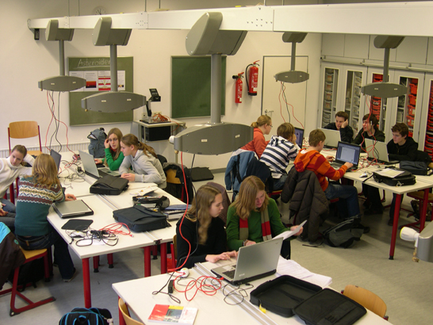

Unterrichtskonzept zur Quantenphysik des Photons
Das Unterichtskonzept zur Quantenphysik des Photons beinhaltet eine Unterrichtseinheit, eine Projektarbeit zur Quantenkryptographie und ein Besuch des Schülerlabors an der Universität Erlangen-Nürnberg. Alle drei Teile des Unterrichtskonzeptes können unabhängig voneinander durchgeführt werden. Grundlage unserer Unterrichtseinheit sind Experimente, die nur über die Quantennatur des Lichts erklärt werden können (siehe unter Konzept).
Anmerkung zur Unterrichtseinheit
"Die vorliegende Unterrichtseinheit zur Quantenphysik des Photons wurde am Albert-Schweitzer Gymnasium in Erlangen in der 10. Jahrgangsstufe erprobt. Dabei wurden ca. 150 Schüler von 5 Lehrern unterrichtet. Im Vorfeld wurde unser Lehrerteam im Rahmen einer schulinternen Lehrerfortbildung in das Konzept eingeführt und mit den Photonenexperimenten vertraut gemacht. In den nahezu allwöchentlich stattfindenden Teamsitzungen kam es zum Erfahrungsaustausch unter den unterrichtenden Kollegen. Offene Fragen wurden diskutiert und Verbesserungen am Konzept vorgenommen. Die vorgeschlagenen 9 Unterrichtsstunden erwiesen sich als sehr knapp, realistisch erscheinen 12 Stunden. Der Unterrichtsgang bietet jedoch die Möglichkeit, die ersten 3 Unterrichtsstunden zu überspringen und die Experimente ohne explizite Behandlung der Detektoren und der angekündigten Einzelphotonenquelle durchzuführen. Schülerumfragen zeichneten ein zufrieden stellendes Bild des Unterrichtsgangs. Eine deutliche Mehrheit der Schüler empfand das Thema als interessant und nicht zu schwierig. Ganz wesentliche Aspekte der Quantenphysik wie das nicht deterministische Verhalten und die paradoxe Komplementarität von Weginformationen und Interferenz können mit dem vorliegendem Konzept sehr gut aufgezeigt und vor allem experimentell begleitet werden."
StR Holger Baier
(Stellvertretend für das Physikteam des Albert- Schweitzer Gymnasiums, Januar 2009)
Aufbau der Unterrichtseinheit
Die Unterrichtseinheit zur Quantenphysik des Photons für die 10. Klasse des Gymnasium behandelt in 9 Einheiten die folgenden Themen:
1. Stunde |
Einführung: Motivation zur Quantenphysik |
2. Stunde |
Grundlagen: Detektoren für einzelne Photonen |
3. Stunde |
Grundlagen: Angekündigte Einzelphotonenquelle |
4. Stunde |
Quanteneigenschaft: Unteilbarkeit |
5. Stunde |
Quanteneigenschaft: Zufall |
6. Stunde |
Quanteneigenschaft: Interferenz |
7. Stunde |
Quanteneigenschaften: Interferenz, Unteilbarkeit und Zufall |
8. Stunde |
Quanteneigenschaft: Komplementarität "Welcher Weg - Interferenz" |
9. Stunde |
Zusammenfassung und Ausblick |
Die 9 Stunden sind zeitlich als absolutes Mindestmaß zu verstehen. Die Quantenphänomene werden qualitativ mit Hilfe von interaktiven Bildschirmexperimente eingeführt. Die interaktiven Experimente können zentral als Demonstrationsexperiment mit dem Beamer im Unterricht gezeigt oder im Computerraum von jedem Schüler einzeln durchgeführt werden.
Als Lehrer können Sie entscheiden, ob die experimentellen Grundlagen (Stunde 2 und 3) unterrichtet werden. Die eigentlichen Stunden zu den Quantenphänomenen (Stunden 4-9) sind auch ohne die experimentellen Grundlagen durchführbar. Mit der reduzierten Unterrichtseinheit wird die Quelle und der Detektor für einzelne Photonen als "Black-Box" behandelt. Beide Wege wurden am Albert- Schweitzer Gymnasium erprobt.
Schwierigkeiten, Fragen und Kommentare der Schüler zur Unterrichtseinheit wurde in ein Lerntagebuch notiert. Einige Schülermeinungen sind hier einsehbar [klick].
Die erarbeitete Unterrichtseinheit steht Ihnen als Lehrer mit interaktiven Experimenten, Erklärungen, Arbeitsblättern und Lösungen kostenlos zum Download zur Verfügung. Hierfür müssen Sie das folgende Formular (Download) ausfüllen und an die Physikdidaktik in Erlangen schicken oder faxen. Sie bekommen als Antwort einen Benutzername und ein Passwort zugeteilt und können die Unterrichtseinheit einsehen bzw. herunterladen: Passwortgeschützte Unterrichtseinheit.
Projektarbeit zur Quantenkryptographie
Unabhängig oder parallel zur Unterrichtseinheit können Schüler der 10. Klasse selbstständig als Projekt das Prinzip der Quantenkryptographie erarbeiten (Abb. 1). Grundlage der eigenständigen Erarbeitung sind die ersten drei Kapitel zur Quantenkryptographie auf dieser Homepage. Erfahrungen zeigten, dass die Schüler zur selbstständigen Erarbeitung der drei Kapitel und der schriftlichen Beantwortung von Fragen drei Unterrichtsstunden benötigen.
Am Albert-Schweitzer Gymnasium in Erlangen bekamen die Schüler zusätzlich den Auftrag ein populärwissenschaftliches Heft mit dem Titel "Kryptographie für Dummies" zu erstellen. Für das Heft mussten die Schüler in einzelnen Artikel die Geschichte der Kryptographie, heutige Kryptographieverfahren und das Prinzip der Quantenkryptogrpahie beschreiben. Der zeitliche Rahmen für das Projekt betrug 8 Schulstunden. Die Klasse musste sich in vier Redatkionsgruppen aufteilen. Von den pro Klasse vier produzierten Heften wurde das beste Heft beim Schulfest verkauft.

Abb. 1. Schüler beim selbstständigen Erarbeiten der Quantenkryptographie
am Albert-Schweitzer Gymnasium Erlangen
Passwort für die Unterrichtseinheit: Antrag
Autor: P. Bronner, Januar 2009